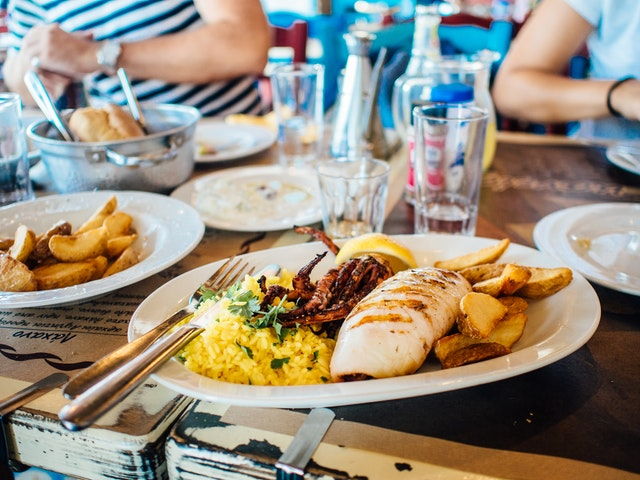
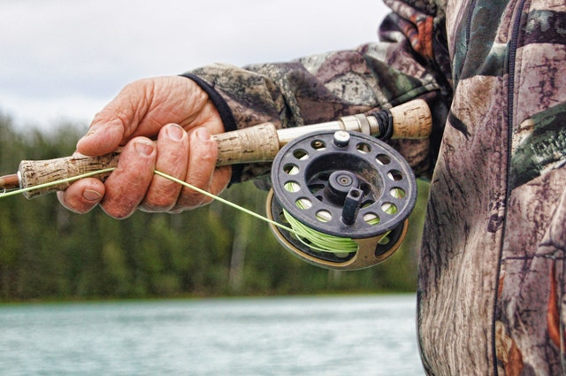
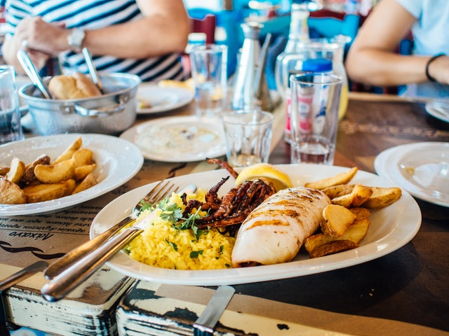
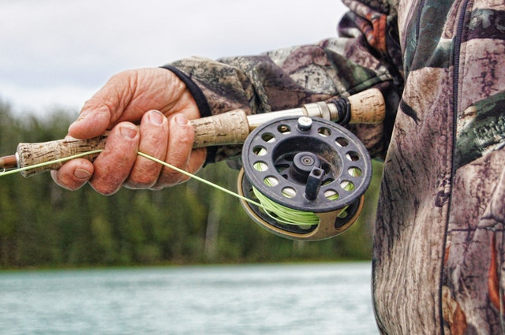

Software Engineer
Backend .NET Developer
Bienvenidos a mi página web personal, donde encontraréis información sobre mi, como estudios, cursos o proyectos a los que estoy enganchado.
Contacto Proyectos
Si no sabes quién soy, aquí está tu respuesta. :)
- Soy un apasionado de la aventura, me encanta viajar, probar cosas nuevas, ir a la montaña, a la playa, hacer deporte, eso sí, siempre que tenga tiempo libre para ello. Me considero friki del cine y de las series (Juego de Tronos, Prison Break, Narcos, Breaking Bad...).
- Otra de mis grandes aficiones es la pesca, me encanta esa tranquilidad que transmite estar en la naturaleza escuchando todo tu alrededor. Por supuesto me encanta salir con mis amigos, y sobre todo hablar, pero no me olvido de mi mejor amigo, con el que estoy todos los días y se gana el primer puesto, mi ordenador.
- Me considero afortunado, porque por suerte he encontrado lo que me apasiona que es mi trabajo como Developer, inventar lineas de código de la nada para hacer cosas, ver sus efectos, ver como evolucionan y sobre todo, ver como funcionan correctamente es una satisfacción que solo nosotros entendemos. Por supuesto si esto se hace en equipo la satisfacción es aún mayor.
Y para terminar una cita de Steve Jobs para reflexionar, y que con suerte estoy cumpliendo.
- La única manera de hacer un gran trabajo, es amar lo que haces. Si no lo has encontrado, sigue buscando., no te conformes.
Un teclado, mi pantalla, y una taza de café.


Con esfuerzo y sacrificio esto es lo que conseguí en las aulas.
Grado cursado desde el año 2013 al 2017 en la Escuela Politécnica de Cáceres de la Universidad de Extremadura. Finalizado con un expediente académico notable con una puntuación de 7,65 sobre 10, además de algunas matrículas de honor.
Cursado del año 2015 al 2016 en la Universidad de Parma. Con una puntuación notable de 8.56 sobre 10. Superando asignaturas en una lengua extranjera y pertenecientes a las ramas de telecomunicaciones, electrónica e informática, enfocadas al grado en Ingeniería del Software.
Aquí aparecen algunos de los lenguajes de programación junto con herramientas, frameworks, o librerías de los que tengo conocimientos, que han sido adquiridos por experiencia laboral, estudios, o por cursos.
Alguno de los proyectos en los que he contribuido.
Actualmente me encuentro trabajando en Payvision, empresa dedicada entre otras cosas al desarrollo de sistemas encargados de procesar pagos online a nivel global haciendo uso de las últimas técnicas de inteligencia artificial, estrategias omincanales y de detección de fraude. Principalmente mi día a día esta en el desarrollo e investigación de estos sistemas de pago utilizando tecnologías punteras. Destacar como principal framework de trabajo .Net Core en versiones superiores a 3.0.
Anteriormente trabajé en Wolters Kluwer, empresa del ambito jurídico dedicada a la investigación y desarrollo de sistema de información y software para el sector legal, asesorías, financiero y de salud. Mi principal labor allí era el desarrollo web utilizando .NET Framework y .NET Core en la parte de 'Back'. También utilizaba algunos frameworks de javascript para la parte de 'Front', entre ellos destaco Vue.js por ser uno de los más conocidos.
Mis aficiones, mis motivaciones, y alguna de las cosas en las que gasto mi tiempo.
 





¿Necesitas algún tipo de información en la que pueda ayudar? No lo dude y póngase en contacto conmigo, a través del siguiente formulario, o a través de mi cuenta de Linkedin..
Gracias por contactar conmigo. Me pondre en contacto contigo lo antes posibles. Saludos!